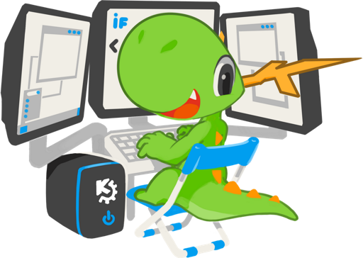
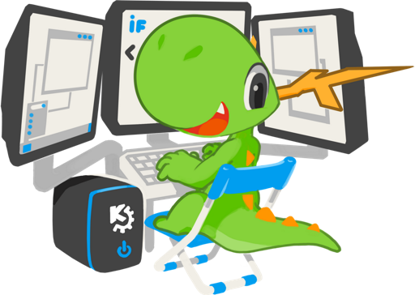

Don't sweat it!
A bit of maintenance is being carried out - we'll be back in a jiffy!
 KDE's Developer Konqi mascot by Tyson Tan. Under Creative Commons Attribution Share-Alike.A bit of maintenance is being carried out - we'll be back in a jiffy!
 KDE's Developer Konqi mascot by Tyson Tan. Under Creative Commons Attribution Share-Alike.